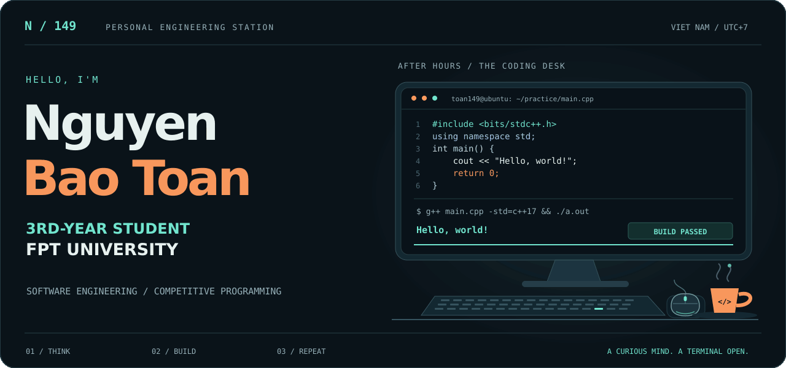
Software engineer. Competitive programmer. Curious builder.
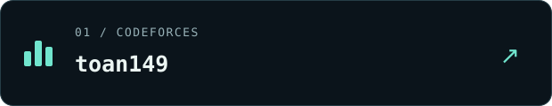
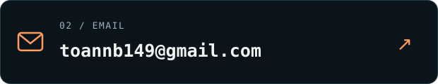
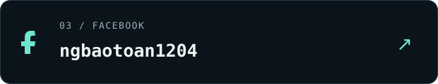
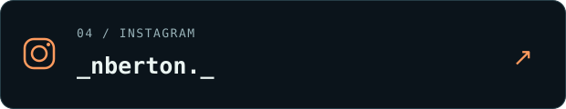
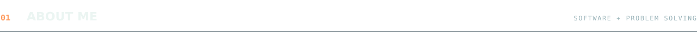
I'm Nguyen Bao Toan — a software engineer, competitive programmer and third-year student at FPT University, Can Tho, Viet Nam.
I build applications, work with databases and create tools for my workflow. Competitive programming keeps my algorithmic thinking sharp.
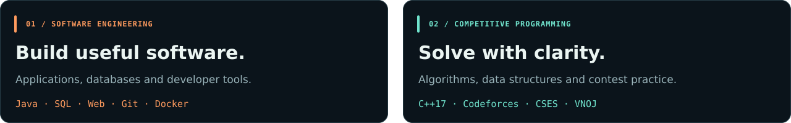
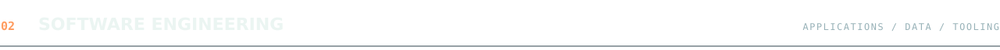
I enjoy connecting interfaces, application logic and data — then improving the code and the development workflow around them.
| Area |
Technologies I work with |
| Java applications |
Java · Swing · Maven |
| Backend & server-rendered web |
Servlet · JSP · JSTL · JDBC · DAO |
| Web interfaces |
HTML · CSS · JavaScript · Bootstrap |
| Databases |
SQL Server · SQL · relational data & CRUD workflows |
| Developer tooling |
Python · Bash · Sublime Text · VS Code |
| Development environment |
Git · GitHub · Docker · Ubuntu |
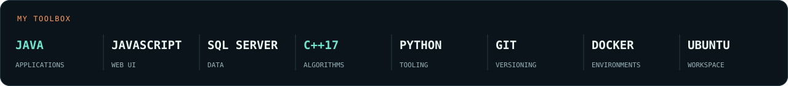
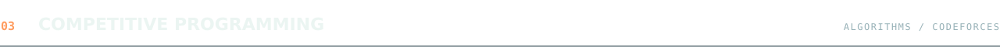
I practice on Codeforces, CSES and VNOJ, with ICPC and OLP as part of my learning journey. My main contest language is C++17.
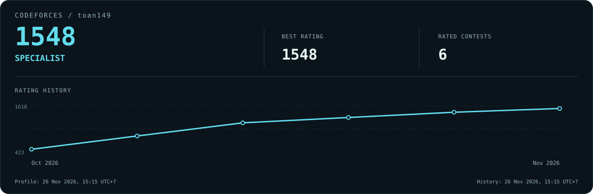
Refreshed from the public Codeforces API. Fetch timestamps are printed on the card; an unavailable API preserves the previous successful snapshot.
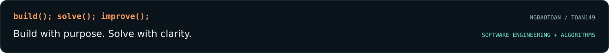